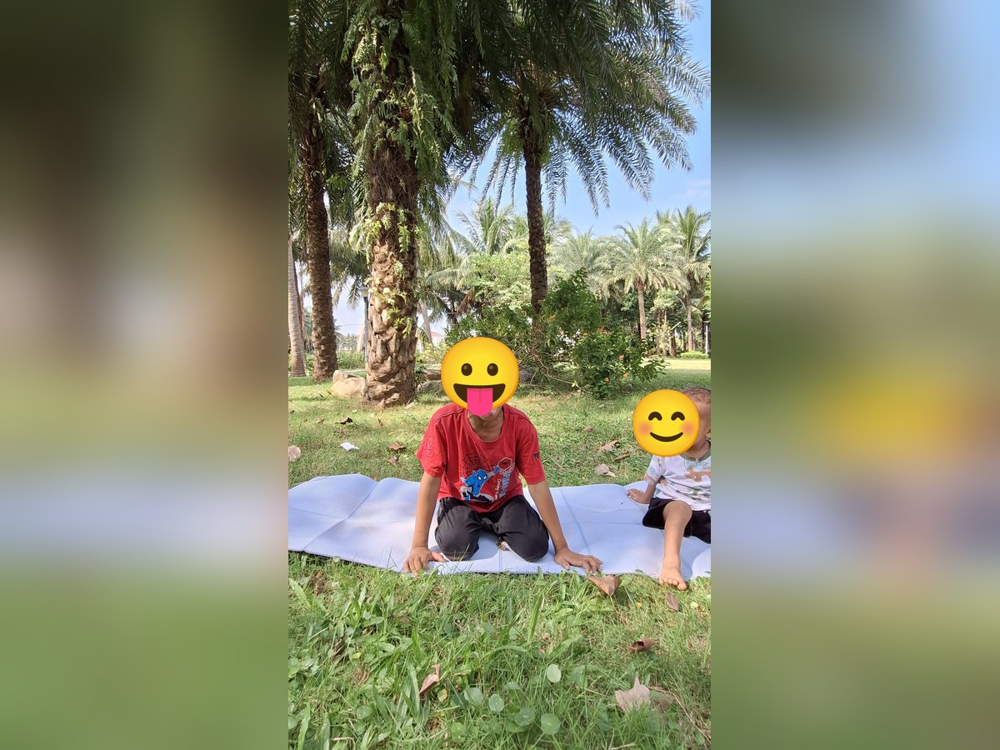
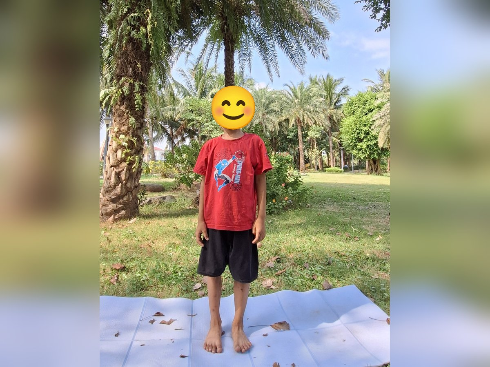
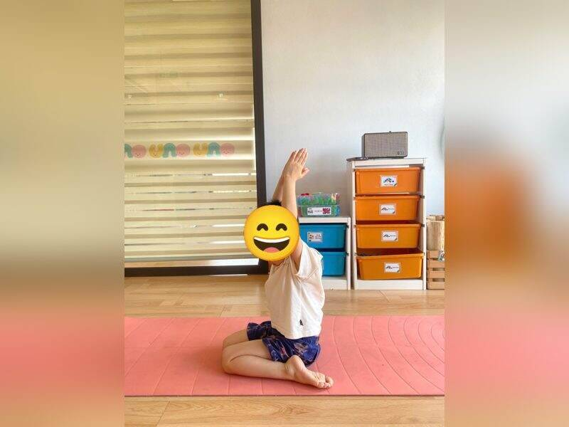
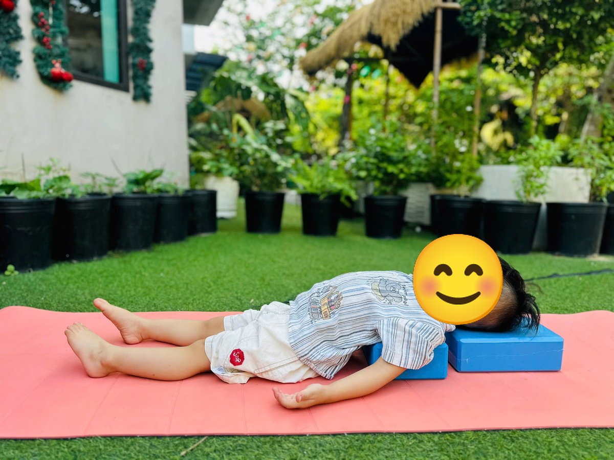

Chủ đề 8 · Tết cổ truyền
Tết đến nhà Dê Con
🌟 Bài học trong câu chuyện
Giới luật yoga: Saucha – Sạch sẽ, gọn gàng. Bé giữ thân thể, đồ dùng và nơi mình ở sạch đẹp.
Kỹ năng sống: Dọn dẹp nhà cửa, chúc Tết ông bà.
1. Khởi động (2 phút)
Cả lớp ngồi xếp bằng thành vòng tròn. Cùng thở 3 hơi thở bông hoa: hít vào bằng mũi như ngửi hoa, thở ra bằng miệng thật chậm. Chắp tay trước ngực và chào nhau: “Namaste, chào các bạn!”
2. Câu chuyện: Tết đến nhà Dê Con (đọc cho bé nghe, 4 phút)
Cô đọc trọn câu chuyện cho bé nghe trước. Sau đó cô kể lại từng đoạn ngắn và cả lớp cùng tập 10 tư thế ở phần bên dưới.
Tết Nguyên đán sắp đến rồi! Năm mới là năm con Dê, nên Dê Con háo hức lắm. Cả nhà ngồi quanh nồi lá dong gói bánh chưng vuông vức. Bố mang về một cành đào nở hoa hồng tươi, ông bà bày chậu mai vàng ở hiên nhà.
Mẹ dặn: "Đón năm mới, mình phải dọn nhà thật sạch sẽ". Dê Con vốn hay bày bừa, đồ chơi vứt khắp nơi. Nhưng hôm nay Dê Con xắn tay áo, lau nhà, cong lưng xuống rồi lại vươn lên, xếp đồ chơi vào hộp gọn gàng. Ngoài ngõ, đoàn múa lân đi qua "tùng tùng cắc", Dê Con cũng không bỏ dở việc đang làm.
Đêm giao thừa, pháo hoa nở rực trên bầu trời: "Bùm! Bùm!". Cả nhà đứng ngắm, ôm nhau chúc mừng năm mới.
Sáng mùng Một, Dê Con tắm rửa sạch sẽ, mặc bộ áo mới. Dê khoanh tay đứng thẳng trước ông bà: "Con chúc ông bà mạnh khỏe, sống lâu!". Bà mừng tuổi cho Dê Con một phong bao lì xì đỏ. Dê cúi đầu, nhận bằng hai tay: "Con cảm ơn bà ạ".
Dê Con ngước nhìn cây nêu cao vút trước nhà, rồi nhìn quanh: nhà cửa sạch đẹp, thơm mùi bánh chưng. Dê Con cười thật tươi: "Nhà sạch, người sạch, năm mới thật vui!"
3. Kể lại và tập 10 tư thế (6 phút)
-
 1
1Bánh chưng vuông
🧘 Tư thế Cái bàn (Table Top)
Lời kể khi tập: Cả nhà cùng gói bánh chưng vuông vức. Mình làm chiếc bánh chưng, lưng thật phẳng.
Cách làm: Chống hai tay dưới vai, hai gối dưới hông, lưng phẳng như mặt bàn. Giữ 3 đến 5 nhịp thở.
-
 2
2Cành đào nở
🧘 Tư thế Cái cây (Tree)
Lời kể khi tập: Bố mang cành đào về, hoa nở hồng tươi. Mình đứng một chân làm cành đào.
Cách làm: Đứng một chân, bàn chân kia đặt vào bắp chân hoặc đùi (không đặt lên đầu gối), hai tay chắp trên đầu. Giữ 3 đến 5 nhịp thở.
-
 3
3Hoa mai vàng
🧘 Tư thế Hoa sen (Lotus)
Lời kể khi tập: Ông bà trồng chậu mai vàng. Mình làm bông hoa, các ngón tay nở ra.
Cách làm: Ngồi xếp bằng, lưng thẳng, hai tay đặt trên gối, ngón cái chạm ngón trỏ như búp sen, thở thật chậm. Giữ 3 đến 5 nhịp thở.
-

4Múa lân
🧘 Tư thế Sư tử thở (Lion's Breath)
Lời kể khi tập: Ngoài ngõ có múa lân "tùng tùng cắc". Mình làm lân, thở ra thật to: "Khàaa!"
Cách làm: Quỳ gối, hai tay chống xuống thảm trước gối (hoặc đặt trên gối), hít vào bằng mũi, rồi há miệng thè lưỡi thở ra "khàaa" như sư tử. Giữ 3 đến 5 nhịp thở.
-
 5
5Pháo hoa giao thừa
🧘 Tư thế Ngồi xổm bật ngôi sao (Squat to Star)
Lời kể khi tập: Đêm giao thừa, pháo hoa nở trên trời. Mình ngồi thấp rồi bật lên: "Bùm!"
Cách làm: Ngồi xổm thật thấp, tay chắp trước ngực, đếm 1-2-3 rồi bật đứng dậy dang tay chân thành ngôi sao. Giữ 3 đến 5 nhịp thở.
-
 6
6Dê Con dọn nhà
🧘 Tư thế Mèo bò (Cat-Cow)
Lời kể khi tập: Mẹ dặn: "Đón Tết phải dọn nhà sạch sẽ". Dê Con lau nhà, cong lưng, võng lưng thật chăm chỉ.
Cách làm: Chống tay và gối, hít vào võng lưng ngẩng đầu (bò "ò ò"), thở ra cong lưng cúi đầu (mèo "meo"). Giữ 3 đến 5 nhịp thở.
-

7Bé khoanh tay chúc Tết
🧘 Tư thế Đứng thẳng (Mountain)
Lời kể khi tập: Sáng mùng Một, Dê Con mặc áo mới, khoanh tay: "Con chúc ông bà mạnh khỏe!"
Cách làm: Đứng thẳng, hai bàn chân sát nhau, tay xuôi hai bên, vai thả lỏng, mắt nhìn thẳng. Giữ 3 đến 5 nhịp thở.
-
 8
8Phong bao lì xì
🧘 Tư thế Gập người đứng (Forward Fold)
Lời kể khi tập: Bà lì xì cho Dê Con. Dê cúi đầu cảm ơn bằng hai tay.
Cách làm: Đứng, gối hơi chùng, cúi gập người, hai tay buông thả xuống sàn. Giữ 3 đến 5 nhịp thở.
-

9Cây nêu
🧘 Tư thế Ngọn nến (Kneeling Candle)
Lời kể khi tập: Cây nêu ngày Tết cao vút. Mình chắp tay vươn thật cao như cây nêu.
Cách làm: Quỳ ngồi trên gót chân, lưng thẳng, hai tay chắp lại giơ cao qua đầu. Giữ 3 đến 5 nhịp thở.
-

10Cá chép ông Táo
🧘 Tư thế Con cá (Fish)
Lời kể khi tập: Dê Con nhìn nhà cửa sạch đẹp, thơm tho, cười thật tươi. Mình làm cá chép bơi lội vui vẻ.
Cách làm: Nằm ngửa, kê viên gạch dưới lưng và dưới đầu (hoặc đặt hai tay dưới mông), ưỡn ngực mở rộng, tay chân thả lỏng như chú cá nằm trên mặt nước. Giữ 3 đến 5 nhịp thở.
4. Thư giãn (2 phút)
Các con nằm ngửa, tay chân thả lỏng, nhắm mắt lại. Cô nói nhẹ: “Hít vào thật chậm… thở ra thật chậm… Con nhớ lại câu chuyện vừa rồi, nhớ người bạn mình thích nhất trong truyện. Cơ thể con mềm như bông, nhẹ như mây.” Sau đó các con nghiêng người, từ từ ngồi dậy.
5. Trò chuyện cùng bé (1 phút)
Dê Con cùng mẹ dọn nhà sạch sẽ, mặc áo mới gọn gàng để đón năm mới. Sạch sẽ, gọn gàng là Saucha.
Cô hỏi các con:
- Con giúp bố mẹ dọn nhà đón Tết thế nào?
- Con chúc Tết ông bà ra sao?
Kết thúc bằng lời chào “Namaste” và một nụ cười.
Lưu ý cho thầy cô và bố mẹ: Tập trên thảm, không tập ngay sau khi ăn no. Bé chỉ làm tới mức thấy dễ chịu, không ép bé. Tư thế đứng một chân có thể cho bé vịn tường hoặc vịn tay người lớn.